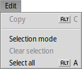
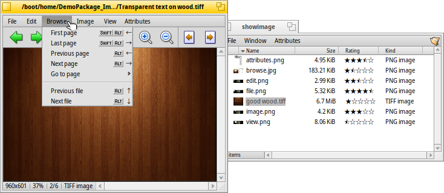
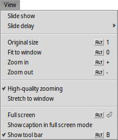
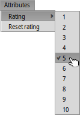

| Index |
| File Edit Browse Image View Attributes Keyboard shortcuts |
 Exibir Imagem
Exibir Imagem
| Deskbar: | Sem entrada, normalmente carregado via duplo clique em um arquivo suportado. | |
| Localização: | /boot/system/apps/ShowImage | |
| Definições: | ~/config/settings/ShowImage_settings |
ShowImage allows you to view images in all formats that are supported through DataTranslators. New formats are automatically recognized when their translator is added to the system. This has been done for Haiku's vector icon files, WonderBrush images or when WebP images became available, for example.
ShowImage doesn't provide editing features, but it does allow you to select a rectangular area and save it in any format. You can also rotate and flip images, but these operations don't physically change images. They only add an attribute that indicate to rotate or flip the image automatically when it's opened the next time.
Let's go through the menus in order, leaving out the obvious items.
 File
File

The sub-menu lists the most recently viewed images.
The lets you open the current image in any application supporting its filetype.
The sub-menu lets you choose a format to save the current image.
opens the Backgrounds preferences to quickly set the current image as backdrop of your workspace(s).
Edit

When is activated ̵ also available with the dashed rectangle icon of the tool bar ̵ you can select a rectangular area of the image that you can then drag&drop to the Desktop or any folder to save it. Dragging with the right mouse button will show a menu when dropping the snippet that lets you choose another image format.
If you don't want to change modes first, you can create this selection frame in "normal mode" by simply holding CTRL while left-click-dragging.
or ESC will remove the selection frame.
Browse

Após abrir uma imagem pode-se rapidamente navegar através de todas as imagens na sua pasta (ou janela de resultado de consulta) pressionando ↑/↓ ou ←/→. Pode-se ver na janela do Rastreador a seleção mudar de acordo.
There is a quick way to open the folder of the current image and even navigate to its parent and subfolders. It works just like with drill-down navigating in Tracker by clicking in the info area in the status bar that shows size, zoom level and format of the current image.
Olhar no menu , exibe outro tipo de navegação: Alguns formatos de imagem, como o TIFF, podem conter muita páginas em um arquivo. Comandos como e permitem navegar por aquelas páginas.
Image

The menu offers the few image manipulations necessary for an image viewer: rotating and flipping the image.
Note however, that the actual image data won't be changed. Only an attribute is added to the file so it'll be shown rotated or flipped the next time you open it.
View

O menu permite iniciar um de todas as imagens em uma pasta (ou janela de resultado de consulta) e definir um de 2 a 20 segundos.
Outros comandos aplicados à imagem atualmente mostrada (sem alterar o tamanho da janela):
exibe a imagem com um fator de aproximação de 100%.
encolhe a imagem dentro do quadro da janela, isto é após ter aproximado dentro dele ou após redimensionar a janela.
e aproxima ou afasta a imagem em etapas de 10%. A aproximação também é feita com a roda do mouse; para rotacionar horizontalmente uma imagem maior do que a janela, simplesmente clique com o botão esquerdo e arraste o mouse.
Two settings don't just apply to the currently displayed image and are remembered when browsing from one image to the next:
applies a very fast filter when zooming to reduce jagged lines and produce a smoother result.
will stretch smaller images to fill the current window frame.
E há um modo com uma opção para a qual sobrepõe o nome do arquivo na parte inferior da imagem.
Por último, irá exibir/ocultar os controles gráficos:

From left to right: Previous image, next image, start slide show (in full screen mode), selection mode, original size, fit to window, zoom in, zoom out, previous and next page (when an image format like TIFF allows multiple pages in one file).
Muitos dos comandos mais frequentemente utilizados também estão disponíveis a partir de um menu de contexto acionado pelo clique com o botão direito do mouse sobre a imagem. Conveniente quando em modo de tela cheia.
Attributes

Here you can set a of the current image between 1 and 10, or choose to set it back to "unrated" (= "0").
In Tracker, ratings are displayed in a "Rating" attribute column as a number of stars. Five stars represent the 10 possible values, resulting in half-star steps. For example, a rating of 7 is shown as 7 / 2 = 3.5 stars: ★★★⯪☆.
You can edit the rating directly in Tracker as well: Select the file, choose from the menu and press TAB to get into the "Rating" column. Now you can enter the new numerical value which will turn into a star rating after hitting ENTER.
Keyboard shortcuts
Aqui está uma lista dos atalhos mais úteis:
| ← / ↑ | Imagem anterior | |
| → / ↓ | Próxima imagem | |
| DEL | Mover para a Lixeira | |
| + | Mais zoom | |
| - | Menos zoom | |
| 0 | Tamanho original (zoom em 100%) | |
| 1 | Ajustar à janela | |
| ALT ENTER | Alternar para o modo de tela inteira (também via clique duplo) | |
| CTRL | Enquanto pressionar CTRL, você poderá criar um quadro de seleção sem explicitamente alternar para o modo de seleção. |